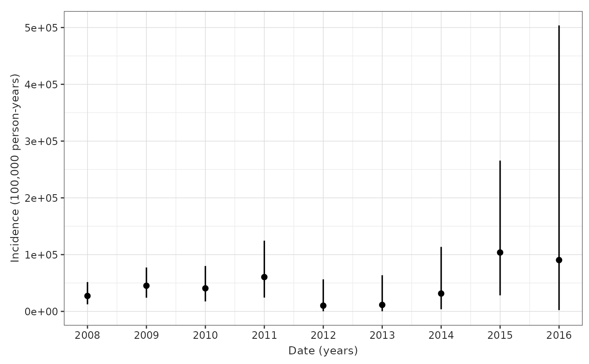

Plot incidence results
plotIncidence.RdPlot incidence results
Examples
# \donttest{
cdm <- mockIncidencePrevalenceRef(sampleSize = 1000)
cdm <- generateDenominatorCohortSet(
cdm = cdm, name = "denominator",
cohortDateRange = c(as.Date("2008-01-01"), as.Date("2018-01-01"))
)
#> ℹ Creating denominator cohorts
#> ✔ Cohorts created in 0 min and 2 sec
inc <- estimateIncidence(
cdm = cdm,
denominatorTable = "denominator",
outcomeTable = "outcome"
)
#> Getting incidence for analysis 1 of 1
#> Overall time taken: 0 mins and 1 secs
plotIncidence(inc)
#> Warning: Removed 5 rows containing missing values or values outside the scale range
#> (`geom_point()`).

# }